2026年北京市中考数学试卷 · 选择题 第6、7、8题 · 对应解析
6. 再生水利用提升工程是北京市“十五五”时期美丽北京建设的重大工程之一．北京市一家在建的再生水厂建成后每天能够供应高品质再生水．若一年按365天计．则该再生水厂建成后，一年能够供应的高品质再生水的总量用科学记数法表示应为（ ）
A. B. C. D.
【答案】B
【解析】
【详解】解：∵每天供应量为
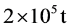
，一年按365天计算∴一年总供应量为：
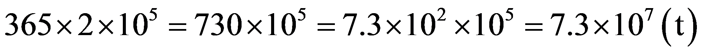
因此结果为．
7. 如图，点 在射线上，在射线上截取，分别以
在射线上，在射线上截取，分别以 、为圆心，
、为圆心， 长为半径画弧，两弧相交于点．连接
长为半径画弧，两弧相交于点．连接 ，
， ，则的大小为（ ）
，则的大小为（ ）
A.  B.
B.  C.
C.  D.
D.
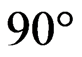
【答案】A
【解析】
【分析】根据作图过程可知是等边三角形，从而得到，，由点在射线上，在射线上截取可知、、三点共线，结合可得，利用等腰三角形性质及邻补角定义即可求解．
【详解】解：如图：
由作图可知，，
∴是等边三角形，
∴，
∵点在射线上，在射线上截取，
∴、、三点共线，
∴，
∵，，
∴，
∴
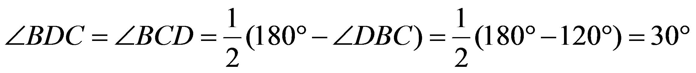
．8. 在平面直角坐标系中，点
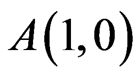
，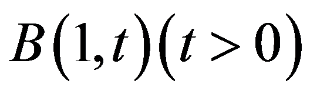
．若点C不与点A重合，且以B，O，C为顶点的三角形与全等，则称C为B的“友好点”．给出下面四个结论：①对于所有的点B，在y轴上都有B的“友好点”；
②能够找到点B，使得在x轴上有B的“友好点”；
③对于所有的点B，在第一象限内都有B的“友好点”；
④能够找到点B，使得在第四象限内有B的“友好点”．
上述结论中，所有正确结论的序号是（ ）
A. ①③B. ①④C. ②③D. ②④
【答案】B
【解析】
【分析】 先明确的边长特征，再逐个判断每个结论，通过计算或举例验证结论是否成立．
【详解】解：∵，
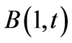
，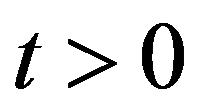
，∴是直角三角形，，三边长为，，，
① 对任意，取点
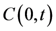
，该点在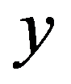
轴上，此时，， 为公共边，
为公共边，∴
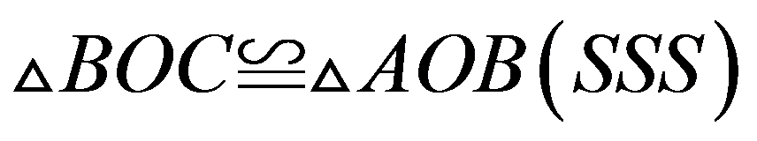
，且不与重合，因此轴上一定存在友好点，①正确；
② 假设 轴上存在友好点
轴上存在友好点
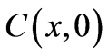
，不与重合，也不能与 重合（否则无法构成三角形），
重合（否则无法构成三角形），∵全等三角形斜边相等，斜边为，
∴
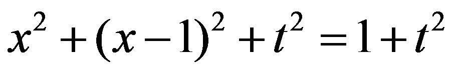
，解得或，均不符合要求，
因此轴上不存在友好点，②错误；
③ 当时，所有符合条件的友好点为
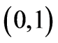
（在轴），第一象限内没有友好点，因此不是对所有点都成立，③错误；
④ 举例：取，如图，设与轴交于点，过点作轴于点
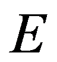
，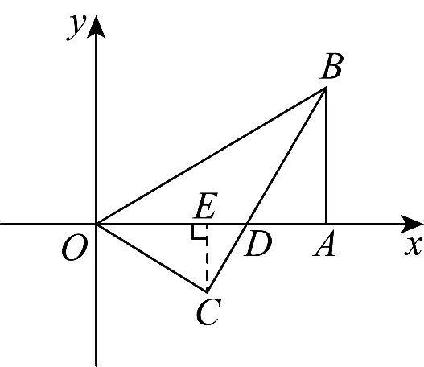
∵，
∴，，
∴，
在中，，
∴
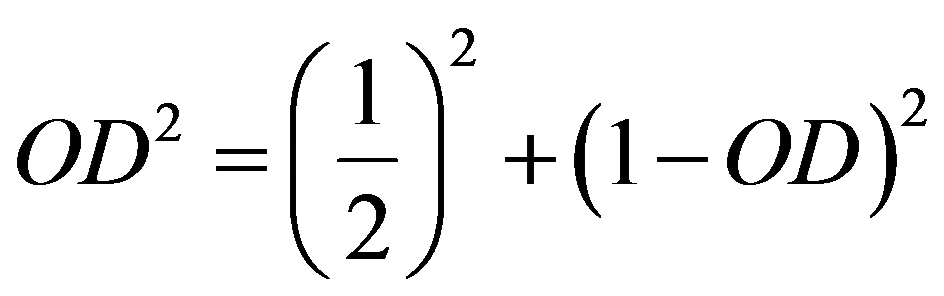
，解得
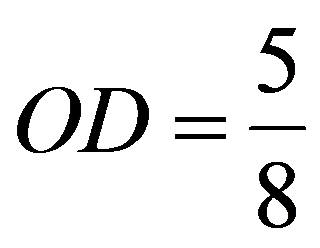
，∴
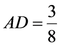
，∴
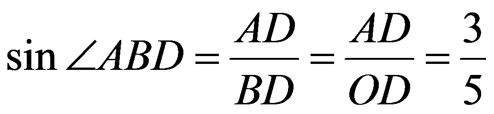
，∵，，，
∴，
∴
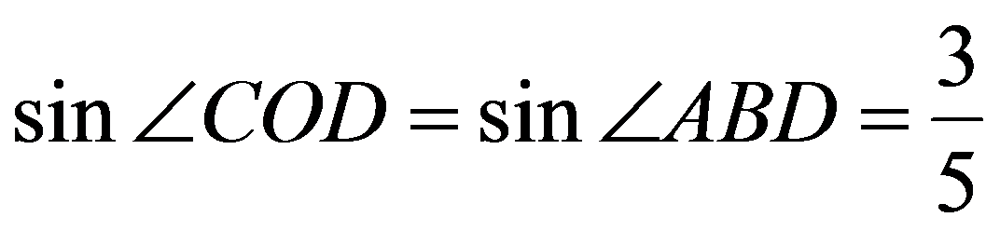
，∴
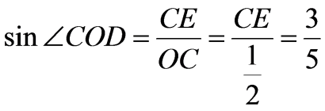
，∴，
∴
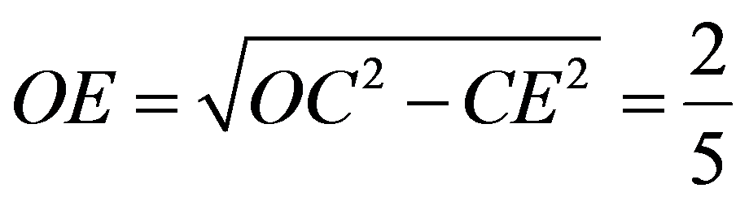
，∴
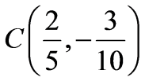
，该点在第四象限，因此存在这样的点，使得在第四象限内有B的“友好点”，故④正确，
综上，正确结论为①④．
第二部分 非选择题
二、填空题（共16分，每题2分）